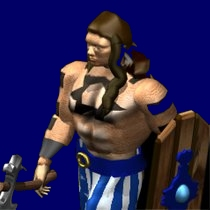

Age of Empires
 De: La Frikipedia, la enciclopedia extremadamente seria.
De: La Frikipedia, la enciclopedia extremadamente seria.
De la serie Videojuegos:
Age of Empires

Los aldeanos pueden llegar a ser tan altos como su propia casa
| Desarrollado por:
|
Hasecorp y los Caballeros de la Mesa Cuadrada.
|
| Distribuido por:
|
Seur.
|
| Diseñado por:
|
Beakman, en compañía de Guillermo Puertas.
|
| Motor
|
Proveniente de un Seat León de cani en nivel 5/10.
|
| Género(s)
|
Educativo.
|
| Fecha de lanzamiento:
|
1904, con el periódico El Mundo.
|
| Modos de juego:
|
De 1 a 8 personas en multijugador.
|
| Requisitos:
|
Trasto purulento, vamos, un Hasefroch
|
| Disponible en:
|
PC, nintendo DS y aunque no lo crea celular aunque es una mierda.
|
| Formatos:
|
CD-RUM y DVD
|
| Edades:
|
A partir de los 0 años (se puede jugar en el feto materno).
|
| Puntuaciones:
|
Las valoraciones se encuentran enterradas junto al Santo Grial
|
«¡Al fin pude conquistar el mundo!»
~ Friki al ganar una partida por conquista de Age of Empires
«Lo que me encanta de este juego es que puedo ser un genocida legal»
~ George W. Bush sobre Age of Empires
«WOLOLOOOOOOOO...»
~ Cura al hacer un rush de monjes en Age of Empires
«¡No me jodas! Se han acabado las minas de oro»
~ Friki Tras llevar 28 horas seguidas jugando en un mapa aleatorio
Age of Empires (más conocido en nuestra lengua cómo El Eiysh off Impaires,Eig o' Impairs o El Empire) es una serie de juegos de estrategia que narra la historia militar desde la Edad Antigua hasta ya entrada la Revolución industrial, está basado en datos históricos, pero como la historia en si es pura mentira, se podría decir que se trata de un video juego fantasioso, exceptuando el caso de age of mithology que se pasa de fantasioso, llegando a lo fumado. El juego ha sido, desde hace muchos años, una fuente de ingresos asegurada para Hasecorp & Company y el sueño de millones de frikis megalómanos ansiosos por la conquista del universo.
Age of Empires I
Primer juego de la saga , el aburrido. el faraón Tutankamón y cosas así. Luego salen los griegos con Alejando Magno a la cabeza con su caballito que parece un perro con catarsis. Aquí se meten catapultas y coliseos a cascoporro. Los persas se ponen chulitos hasta que Leónidas con sus 300 aparece en las Termópilas y se organiza el acojone total, Ephialtes es asesinado por Paris Hilton. Sócrates opina de esta parte del juego cómo “la más ridícula que vio el mundo”. Esta opinión fue sumamente criticada por los políticos helenos de la época, por lo que fue exiliado a México 40 años y finalmente acabo como proxeneta en Tijuana. También tiene cabida aquí Julio César y sus famosas orgías multi-étnicas.
Se rumorea que a la empresa responsable del juego se le escapó una beta del juego en el año 59 a.C., originando así una controversia helénica entre dicha empresa y Julio César, originando así la expansión. (?)
Age of Empires I: Rise of Rome
En español "La Risa de Roma". La expansión del primer juego de la saga. Julio César se muere del SIDA y manda a Judas Iscariote para matar a Jesús de Neanderthal y conquistar el futuro. Sin embargo, un grupo de irreductibles galos atacó a las 28:30 de la mañana al ejército romano, y al final hubo gran regocijo.
Además aparece un Terminator para defender a Jesús.
No obstante, Zerg Rush.
Age of Empires II
Pateras sarracenas acercándose a costas gaditanas
La segunda edición de la trilogía va cargada de emoción (en la que el agua no se mueve y los arboles al cortarlos magicamente caen en menos de 0,1 segundos!). En primer lugar, está William Wallace. Wallace es un simple campesino, así muy bajico, escuchando Mago de Oz,con una melena desencajada y pelirroja, y afeitado... como son todos los escoceses. Un día está pescando con un hacha (símbolo inequívoco de su procedencia vasca) o con una granada (aquí se ve de a donde salio la tradición de saddam)y se da cuenta de que empiezan a llegar pateras llenas hasta los topes de inmigrantes con una ortodoncia sencillamente HORRIBLE, eran los ingleses. Es ahí cuando empieza a tomar medidas mandando a los británicos al quinto pino. La iniciativa tomada por el joven William es muy criticada por el pueblo escocés. Al final al pobre le cortan la cabeza, pero no se muestra en el juego para que no salga volando el CD de AOE 2 por la ventana de nadie.
También se cuenta la gran aventura de Juana de Arco. Juana es una anciana consumidora de setas alucinógenas, lo que le provoca psicodélicas apariciones marianas. Un día se arma de valor y visita al rey de Francia, el Delfín (la segunda especie mas inteligente de la galaxia). Éste le obliga a abandonar Francia por injurias a la corona, por lo que no tiene muchos seguidores. Así, se pilla un vuelo de baratillo al Reino Unido( Son jodidamente odiados los ingleses en todos lados), donde es cordialmente recibida por el monarca. El soberano de Inglaterra se hace gran amigo de Juana, más que nada por su habilidad para conseguir pastis. La historia acaba bien, y marca el inicio de una época de paz entre dos reinos. Con excepción de que los ingleses se vuelven caníbales y devoran a Juana rostisandola en la hoguera.
Otra bonita anécdota es la de Genghis Khan. Genghis es un chaval que tiene serios problemas de personalidad. Cuando de repente le da el venazo y decide cogerse un caballo e ir montando expediciones. Un día lleva a su horda a una excursión por la China. Los chinicos se lían a tiros con los mongoles en la aduana. Pero Genghis es un hombre duro, y decide…huir en busca de una almáciga para contentar a los chinescos, pero murió en el intento.
Barco coreano perdido en Escandinavia preguntando a los paisanos si saben cómo se va a La Coruña.
También está la famosa campaña militar de Federico Barbarroja. Gran amante de los buenos vinos, Federico era un adolescente preocupado por sus problemas de acné. Pero algo acaba de ocurrir: en Alemania han prohibido la pornografía, y la única forma de conseguir material erótico es montando una cruzada para irse a Tierra Santa. El suyo fue un viaje largo y agotador…y muy caluroso. Barbarroja nunca olió tierras musulmanas. Murió ahogado en un río (según algunas versiones, en una tienda de relojes) el 34 de Multifebrero de 1175, según el calendario Sarilopinoso. Dicen que quiso refrescar las pelotas en un rio del desierto pero no sabia nadar y se lo llevo la corriente.
La última campaña que se da a conocer en el juego es la de Saladito. Siempre había sido un marginado escolar, lo que le había incapacitado para llevar a cabo una vida satisfactoria, ya que era un hombre lleno de complejos. A los 26 años fue expulsado de la iglesia musulmana tras admitir convencidamente que le gustaba el tocino y la cerveza. Tuvo que huir a Italia donde se codeó con artistas medievales de muy buen ver en todo el mundo feudal de la época. Finalmente, el Papa le detuvo por posesión de material informático ilegal y fue juzgado por la Santa Inquisición.
Age of Empires II:The Conquerors
«Santiagoo! Construir! Mande?»
~ Friki joteando repitiendo despues de jugar una partida st con Españoles.
«anktak »
~ El mismo Friki ahora puteando repitiendo despues de jugar partida de CBA con Mayas.
«No me Funka tu ip (192.168.1.1) wn »
~ Ese mismo Friki haciendole saber a su compañero del IRC que ES UN PUTO DE LOS COJONES es un NOOB.
«Crea tonto ql. Saken CBA »
~ El mismo friki sin vida social desesperado por machacarsela obtener su dosis de "age"
Esta continuación de la saga nos permite viajar sobre todo a la América medieval, donde los aztecas (dueños del sol y la luna) debido a su gran poder, deciden matar y aniquilar a los pobres españoles quienes buscaban una alianza y la paz en el continente Namekuiano.
En este juego puedes notar varias mejoras, los aldeanos al construir un edificio de recursos ya no se quedan parados como pendejos, gracias dios!!!!! y puedes poner colas de granjas para que a la hora de estarle dando en la madre a tus enemigos no te distraiga y te haga enojar ese maldito ruidito de tssstsssss y tengas que volver a rehacer las granjas para que cuando vuelvas a ver a tu ejército no quede ni putas madres de este.
Las nuevas unidades de esta expansión son los guerreros guajolote, los guerreros gato y los arqueros emplumados, los dos primeros llevando botargas muy vistozas. Los arqueros emplumados y los guerreros totol son las únicas unidades a pie que pueden correr, todas las demás se quedan viendo mientras una bandada de enemigos los hacen carnitas.
Age of Empires III
El juego empieza en el año de 1492, cuando Cristóbal Colón llega a América. En esta edición, ocho potencias mundiales (Inglaterra, España, Rusia, Portugal, Turquía, Alemania, Francia y Holanda) se disputan Yankilandia y sus alrededores. Los escenarios suelen tener siempre una estrategia marcada:
- Creas tu ciudad.
- Pides tabaco de gorreo a la Metrópoli.
- Cuando tus soldados tienen una cantimplora y un paquete “Ducados” cada uno, salen a explorar y a matar muchos indios.
- Cuando ya han sometido a las suficientes tribus indias, se lanzan al ataque.
- Entonces ganas la partida, pero no sirve de na’, porque estaba en nivel fácil.
- Los turcos que te los cojes ilusionado pensando en sus
mierda jenizaros,acabas hasta la polla tras tres minutos cuando compreubas que constantemente tus aldeanos se follan entre ellos sin que lo puedas parar. (al final no sabes donde meterlos y te chupan poblacion)
- Cuando te peleas con los turcos y vez que se sacan un tubo de metal gigante con tipos igualmente gigantes si los comparas con el cañon real, te encojonas porque pueden con casi todo, pero cuando te los cojes te dan muy poca experiencia
- cuando decides usar a los turcos para usar su megacañon te encabronas porque a ti te dura bien poquito.
- Los barcos crean tropas de la nada, aún cuando nadie está abordo.
- Por primera vez los aldeanos tinen armas para defenderse (¡¡¡que no sirven!!!).
- ¡Si escojes indios ganas! ("War chiefs","Asian dynasties")
- El héroe es inmortal, si lo matan sólo lo resucitas con dos habanos
- Los indios "bailan" para pedir poderes especiales al Monesvol.
- Cuando tienes los puestos de comercio siempre pasa un tren, aún cuando estés en la primera edad.
- En el primer escenario de la primera campaña, los aldeanos tienen rifles cuando los soldados solo tienen espadas y flechas
- En la segunda campaña al tio de John Black se le desprende la cabeza despues de una patada en los testiculos
Age of Empires III: The WarChiefs
Es la expansion del juego que trae 3 nuevas "civilizaciones" indigenas, los Iroqueses Sioux y Aztecas, aparentemente al comienzo del juego aparentan ser unas buenas opciones alternativas pero luego te decepcionan totalmente al saber que los Aztecas lo único que pueden usar es infantería y más mierda infantería y gracias a esto cuando te atacan con cañones generalmente te vuelven mierda los ejércitos porque no tienes como destruirlos, los Sioux ya tienen caballería pero no pueden crear artillería por lo que te toma 20 minutos asediar la capital enemiga cuando tu enemigo lo habria hecho en solo 5 minutos, no hay destacamentos ni torres ya que los cuarteles funcionan parecido a diferencia de que solo lanzan una flechita como en el AOE II, los Iroqueses son mejores que los anteriores ya que por lo menos pueden crear artillería y sus unidades de infantería y caballería son bastante fuertes.
Otro nuevo cambio es la posibilidad de usar el modo "revolucion" a la cuarta edad que te da la posibilidad de mandar a la mierda a tu antigua nación y cambiar a una nueva dependiendo de la civilización, si haces eso tus aldeanos se encabronaran se transformaran en milicia colonial y tendras una nueva baraja de metropoli con envios infinitos, el problema es que si te quedas sin envios y te destruyen tus edificios como iglesia arsenal etc, tus enemigs te volveran mierda ya que no puedes construir nuevos edificios ni recoger recursos. A menos que hayas tenido la suerte que tuve la primera vez que le di "revolución" (por pendejada curiosidad) y tenía a los Cree como aliados, porque esos te mandan algunos aldeanos franceses.
Otro cambio es que se pueden crear espias en la iglesa ya que antes no servia de puta mierda, tambien puedes construir un bar donde crear mercenarios pero al final sera una estafa ya que cada unidad ocupa minimo 7 de población y pueden ser fácilmente eliminados, ademas ahora hay 2 unidades nuevas de artillería, cargas explosivas que son parecidas a los petardos del AOE II, irónicamente estas unidades son excelentes tumbando fuertes, puestos comerciales, torres y cualquier edificio que te toque las pelotas y la computadora nunca los creara, y la otra unidad es artillería a caballo (que no hay ninguna puta diferencia ya que todas van tiradas por un caballo)esta es prácticamente igual a los falconetes pero son un mas caros ocupan mas poblacion y solo sirven para atacar infantería.
Age of Empires III: The Asian Dynasties
Es la segunda expansión del juego y trae 3 nuevas civilizaciones, esta vez asiáticas y más mejores que las anteriores cagadas civs. Las nuevas civilizaciones son Chinos, Japoneses e Indios. Todos ellos empiezan con uno o dos monjes (que reemplazan al explorador) y son más fuertes y tienen varias habilidades especiales como golpes al mismo estilo Kung Fu de los monjes chinos, los japoneses se teletransportan como Gokú, y los Indios que son 2 elefantes bien cabrones te aplastan. Además, todos ellos pueden crear pelados shaolings o animales, etc.
Un nuevo edificio, el consolador Consulado, exclusivo de estas 3 civs, con el cual puedes aliarte hasta con 4 países y obtener unidades y edificios exclusivos y así sacarle la mierda ventaja al enemigo.
Algunas características de la saga
 Guerrero
cani (véase su "tribal tatoo").
Forges (genial, como siempre) puso una denuncia por plagio
- Los personajes mueren a pesar de no tener contacto físico al momento de la batalla.
- A tus aldeanos los debes alimentar una vez (50 comida) y milagrosamente viven felices y sin hambre durante el resto del juego.
- Las casas estan de adorno.
- El año en AOE es equivalente a 0,9354666426999 segundos en tiempo real, lo que explica que una casa se construye en 30 segundos, pero deja en duda lo lento que se muevan las tropas, por lo que concluimos que en un año AOE, se muevan 0,5 centímetros.
- Puedes prescindir de una cuartel, una universidad, etc, pero si no tienes un centro urbano, estás jodido.
- Los aldeanos no necesitan dormir, comer, cagar, mear, coger, jugar, y no lo hacen aun que quisieran, es más, para qué demonios necesitan una casa si nunca se meten a ella? (los Hunos son mas listos)
- El rey de los aztecas, mayas, chinos, japoneses, etc. sigue siendo el mismo gordo con traje británico.
- Se construyen universidades pero nadie va a allí,
por fin un mundo perfecto.
- en AOE II las reliquias generan oro por arte de magia.
- Los elefantes de guerra se mueven solos, sin jinete y encima son considerados caballería.
- Los lanzapiedras están poseidos se mueven, se montan y se desmontan solos.
- Los aldeanos prefieren morir ante una horda de vikingos violadores antes que saltar al mar y nadar un poco.
- El monasterio de los mongoles parece un burdel.
- Los edificios se queman, cosa que seria creible por los cañones y rifles, pero tambien se queman aunque los ataques con una lanza, espada, o flechas.
- Puedes obtener carne cruda de los arbustos.
- Cuando pasas de edad, tus tropas y construcciones digievolucionan y cambian de color.
- En AOE II puedes conseguir un automóvil llamado Coche COBRA en plena Edad Media.
- Los aldeanos pueden construir un castillo con solo un martillo sin quejarse.
- La infantería de los aztecas y mayas es la misma que la de los europeos.
- El centro urbano dispara flechas a pesar que no este nadie dentro.
- En modo escaramusa, puedes usar cartas de evio que solo funcionan en las misiones como "puños".
- Tu carreta de mercancías va vacía al mercado aliado, pero regresa con oro.
- Los aldeanos pueden reparar todos los edificios tan solo martillando el suelo.
- Los aldeanos y tropas se alimentan de carne cruda y no mueren por intoxicación.
- Si un aldeano tala, minea o saca alimento, se puede ver lo que lleva, pero a la hora de construir no llevan nada más que un martillo y luego hacen ¡magia!
- En AOE, hacer una granja te cuesta 40 de madera, y pa' que rayos necesitan la madera??
- Un arquero en AOE, puede disparar flechas infinitas, como Légolas.
- En AOE, crear un soldado con hacha cuesta 50 de alimento, pero de madera y piedra p'a el hacha, ná de ná...
- En AOE hay lobos pero no perros, en fin, sea el mapa que sea es el único animal salvaje que hay.
- En AOE puedes sentir que conquistar todo el mundo tras solo matar a 20 milicias (cavernícolas)
- En AOE, puedes encontrar reliquias valiosas tiradas en un bosque.
- Los aldeanos tienen un arco que solo usan para cazar, pero si los ataca el enemigo los muy tarados sacan un palo para combatir y al final se encabronan.
- Puedes derrotar a un enemigo de la Edad Alta Media con un ejército de jabalíes.
- En AOE, las tropas son tan inútiles que no pueden nadar o bien sufren de hidro fobia ya que ante una emboscada prefieren morir que intentar curzar un rio (sin importar lo pequeño que sea), ni atravesar bosques con árboles pasando por entremedio de éstos.
- En el AOE las catapultas y todo eso se mueven solos.
- En los barcos no pueden entrar 11 piqueros, pero sí 10 elefantes.
- A pesar no existir radares, siempre sabes donde están tus tropas.
- En AOE cada barco vale 1 de población, pero no cuentan los que manejan al barco.
- Se sabe que el único objetivo de las tropas es seguir una mierda de bandera y destruir lo que se les venga encima.
- Los aldeanos pueden llevar con sigo picotas, hachas, martillos, flechas, canastillas, cuchillos, lanzas, redes, a pesar de ni siquiera tener un bolso o bolsillo.
- Los aldeanos matan a los lobos pero no se los comen.
- Los persas no se comen a sus elefantes aunque se mueran de hambre.
- En el AOE I los cañones y todo lo de metal es de oro, y lo más ridículo de esto es que dos edades se llaman bronce y hierro.
- En Age of Empires los soldados nacen adultos y nunca envejecen a pesar que cada segundo en la vida real es 1 en AoE (ver punto 3).
- Para que aparezca otro aldeano (osea que nazca) los aldeanos necesitan 50 de alimento para irse a coger y reproducirse.
- Las catapultas pueden disparar 3 proyectiles a la vez, a pesar que son cargadas con una.
- En AOE uno puede crear unidades de pólvora sin ni siquiera haber nitratos, carbón ni azufre pa hacerla.
- En el AOE en plena Edad Media, sin haber médicos ni curanderos, no hay riesgo de morir de peste ni mierdas.
- En el AOE hay hacinamiento, caben 5 tíos en una casa más chica que ellos mismos (los 5).
- En el AOE los aldeanos sean de la civilización que sean solo tienen 2 modelos,de hombre (siempre sin camiseta incluso en escenarios de nieve) y de mujer.
- En el AOE los peces nunca se mueven ni dejan de saltar.
- En el AOE los sacerdotes te sanan las heridas apuntándote con un palo, y "compran" casas y tropas del enemigo hablándoles en un idioma desconocido, consistente de tres vacáblos: "Ahiohiohio, ahiohiohio", "Wolohooooo, wolohoooo" y "Ayooooyoyoyooo, ayooooooyoyo".
- Cuando empiezas la primera edad, piensas que son unos nomadas salidos del neolitico!!pero no estan en la alta edad media!!
- En el AOE un pinche barco puede llevar 20 elefantes, cada uno más grande que él mismo y sin hundirse. Una teoría dice que los animales del Aoe son pokemones
- En AOE los castillos atacan solos lanzando flechas que sale de las paredes.
- En AOE los castillos son destruidos por unos pinches arqueros descendientes de Légolas.
- Construyes un castillo pero no puedes ver al rey ni a su familia (los cuales tampoco cuentan en la población).
- En AOE puedes conseguir un maniquí con forma de hombre que habla (con voz amanerada) y que camina a la velocidad de la luz y recorre en 5 segundos todo el mapa, (este, en realidad, camina normalmente, debido a que en AOE 1 segundo en nuestro mundo es 1 año allí, ver punto 3)
- En AOE puedes conseguir un mono, que en realidad es la versión miniatura de King Kong, que destruye los edificios con 1 golpe, pero con cinco simples flechas se mueren.
- En el AOE siempre es de día a pesar que cada segundo sea un año
- En el AOE puedes hacer transacciones bancarias en el mercado sin necesidad de tarjeta de crédito o enviar el trato
- Los edificios se incendian aunque sean atacados con espadas, lanzas, flechas, etc.
- Los aldeanos pueden destruir pirámides con sólo un palo.
- Los jinetes son más altos que el primer piso de los edificios.
- En AOE III los edificios se reparan solos.
- En AOE III los campos producen alimentos infinitos, sin importar las sequías, heladas o plagas que puede padecer el campo.
- También puedes crear un campo donde los aldeanos pueden extraer monedas de forma infinita.
- En eish of empaier 2 es el unico lugar donde un gordo (rey) se mueve mas rápido que todas las unidades
- Todos las unidades se crean al mas puro estilo matrix, adultos y todos iguales
- Las murallas estan echas de yeso ya que todo parece afectarlas, espadas, cañonasos, flecha, consoladores gigantes lanzados de una ballesta muy grande que se maneja sola por gracia divina.
- La principal función del AOE III es cojerte toda la tarjeta gráfica y memoria ram.
- Cuando juegas al AOE los cadaveres se descomponen en 5 segundos, cuando suelen tardar años en la vida real.
- ¡Las ovejas te siguen con tan solo acercarte! y lo cojonudo es que los campesinos que van equipados con todo el set de bricomania (arcos, mazos, navajas...) los matan con el mismo baston con el que las dirigen!! deben de estar mazados!.
- En AOE 2 los barcos artillados españoles se drogan exageradamente y por eso son tan rápidos.
- En AOE 2 los aztecas y los mayas pueden crear petardos, cuando se supone que no conocen pólvora.
Test Adicto al Age Of Empires
- Cuando ves por la calle a un sacerdote lo matas para que no se agarre la reliquia.
- Ves una mina con mineros dentro y empiezas a buscar un establo "para mandar a la caballería" porque piensas que "te estan robando los recursos".
- Tus amigos por MSN se extrañan cuando les escribes 1, 2, 11, 18, 24, 30, 17 o 39 y es peor todavía cuando los dices en persona.
- Tu esposa o novia anda por la casa haciendo sonidos de AOC y ella no juega ni una partida.
- Si un amigo te cuenta que está limitado de dinero, tú le dices que escriba "Robin Hood".
- Vas a la universidad y te pierdes la clase por andar buscando dónde se mejoran tus torres y muros.
- Después que ganas una pelea en la escuela le dices a tus amigos que el otro fue "owneado".
- Y si pierdes les dejas un mensaje que dice "Mis aldeanos eran incapaces de cazar ovejas, yo he abdicado".
- Pasas por un circo, ves a los elefantes y te preguntas ¿cómo habré llegado a Persia sin piqueros ni alarbaderos?
- En el mismo circo, ves a los camellos y piensas, "lástima que no soy sarraceno para mejorarlos".
- Escuchas en clase de económicas que el profesor dice: -Los chinos van a ser una potencia muy poderosa en el mundo; y tú le sueltas: -Anda, con esos Chu Ko Nus también gano yo!!
- Cuando ves a tu vecino poner una cerca de alambre para proteger su jardín, tú dices "puta, qué gay! ya se cerró".
- Gente hablándote por teléfono se preguntan qué melas te pasa porque nunca pareces estar poniéndoles atención a lo que te están diciendo y tú les respondes con grabaciones de los comandos.
- No copias del cuaderno de tu amigo respuestas porque haces flood.
- Conoces a alguien en cada room de juego que entras.
- Tras sacarte el Bachiller y acceder a la universidad, lo primero que preguntas en la recepción del edificio universitario es: -Disculpe dónde puedo desarrollar las torres de cañones??
- Te propones construir un rascacielos en 3 minutos con un martillo en medio de la calle.
- Vas por el campo y cuando ves un rebaño te acercas antes que el pastor para ver si a los collares les cambia el color y te puedes llevar las ovejas (y si no, se los cambias tú).
- Vas por la calle y al ver a un calvo transportando barriles te alejas por miedo a que explote.
- Piensas que tú eres más grande que tu casa y que no te hace falta entrar en ella, lo único que debes hacer es trabajar, picar y talar... sin descanso!!!
- Puedes empacar y desempacar un lanzapiedras en tu patio en menos de 60 segundos.
- Apruebas todos los exámenes de idiomas raros como el coreano, godo, franco y sarraceno. Pero al llegar a la gramática española te catean por hablar como si salieras del renacimiento... Santiago!! Mande?? EEE.
- Le has preguntado al del taller numerosas veces acerca del valor de los lanzapiedras y arietes.
- Si construyes una granja tratas de aliarte con el chino del chifa de la esquina, porque los chinos te dan bonus de granja.
- Entras a un corral, matas al cerdo creyendo que es un jabalí y te lo comes crudo.
- Te vas a un cerro y consigues 650 piedras porque con eso podrás construir un castillo.
- Haces preguntas acerca de clases de manejo por MSN, aparece de la nada afuera de tu casa un coche COBRA, te subes en él y se lo vas a presumir a tus amigos.
- Cuando tu mamá te dice que flushees (que le bajes a) la taza de baño, tú empiezas a crear piqueros y guerrillas.
- Si quieres cenar de una vez, subes el volumen y escribes "3" (alimento por favor) para que tu mamá lo escuche.
- Cuando vas por la carretera y ves un letrero de "cruce de venados", paras, te sales del auto y construyes un molino.
- Si lees en un libro de que la cruzada de Barbarroja fracasó, tú los demandas por fraude y discutes con el profesor afirmando que "esta tarde Barbarroja y Ricardo Corazón de León llegaron a Jerusalén y ganaron la partida".
- Estás en "Agers Anónimos" y no has estado sobrio nunca en 5 años.
- Cuando alguien exclama, "Eso fue un rush", tu preguntas, "que civi usó?"
- Repruebas todas tus clases pero sacas 10 en historia antigua, sobre todo medieval.
- Si en el examen de historia te preguntan sobre Gengis Khan, tú respondes que "era un viejito que me dio de misión llevar una reliquia a un monasterio y proteger su maravilla".
- Tu mamá pregunta qué le pasó a la casa y tú dices "la suprimí por accidente"
- Construyes una herrería en la casa de tu amigo chino para que las tecnologías te cuesten más barato.
- Tu papá te quiere invitar a pescar y tú le dices "no te preocupes ya dejé un pesquero allí".
- Luego vas al mar y ves a tu pesquero (un barquito vacío y solitario flotando eternamente) y te preguntas por qué se demora tanto en volver con 15 de alimento.
- Finalmente, en vez de
desahuevarte reaccionar, piensas que "capaz ya se acabaron los peces del mapa".
- Entonces le gritas al botecito desde tierra que construya una trampa para peces,...y esperas que te haga caso.
- Cuando tu profesor te pregunta donde está tu proyecto y tú dices "todos mis aldeanos fueron violados por caballos y no pude ir forward"
- A tu amigo le va mal en algo y tú le respondes llamándolo "rock, noob o rocka".
- Te sientas a ver "Titanic" la película y dices "todo se pudo haber evitado si lo hubieran puesto en "Patrullar""
- Estás en una iglesia y le disparas al sacerdote con una flecha por que "estaba tratando de convertirte".
- La policía te pregunta por qué disparaste al sacerdote con una flecha y tú dices, "venía hacia mí, alzaba las manos y se oían voces".
- Golpeas a tus vecinos que caminan cerca de tu casa porque pensaste que te contratacarían con un flush.
- Le disparas a un lobo porque "para que no ataque a los aldeanos".
- Tu amigo obtiene la más alta calificación en la clase "y tu le dices que es un uto point trader".
- Eres capaz de decir cosas básicas como "cazar" o "talar" en 18 diferentes lenguajes, Santiagoooo...
- Tu novia está tan enojada por el AOC que tú prefieres hacerle creer que estabas navegando sitios pr0n.
- Pones tu rating de zone en tu currículum.
- Persigues a un tipo vestido de blanco que habla inglés porque crees que es un VDML.
- Prefieres ir a iglesias bizantinas porque "los sacerdotes curan más rápido".
- Le dices a tu hijo, hermano, o amigo "GL HF" antes de su juego de fútbol.
- Te crees un Samurai y acuchillas a unos bailarines callejeros de danzas prehispánicas aztecas con una espada porque "solo son infantería de exploración" pero corres del que trae la máscara del jaguar porque "ése tiene bonificación contra la infantería".
- Pierdes un partido de futbol, tenis, basquet, etc le dices "gg" a tus contrincantes y te vas encabronado diciendo "malditos aliados rocas" (rooks, noobs la que uses)
- Andas de paseo en un rancho a caballo cabalgando y de repente ves a un campesino que camina tranquilamente llevando en su espalda un palo largo y tú te vas
hecho la mierda rápido por que "era un piquero".
- Un amigo te platica un suceso o accidente que le pasó y tú le preguntas "y donde está el rec?"
- No vas a la función de teatro que te invitan tus amigos porque dices "putos noobs, solo les gustan los escenarios". (me dolio este u.u)
- Vas a un salón de tu escuela y escribes en el pizarrón "CLAN PATITOS DE ACERO reclutando, 1250+ o trata de no ser noob" y ahí te quedas horas enteras velando el uto salón, aunque no se quiera reclutar ni el conserje de la escuela.
- Cuando ves una casa en construcción calculas de una manera fácil el porcentaje de construcción.
- En un partido de futbol crees que a un jugador lesionado lo sacan del partido porque tenía lag.
- Viajas hasta el zócalo de la Ciudad de México y te dices a ti mismo: "si no hubiera perdido la última misión de la campaña de Moctezuma el Templo Mayor aún estaría en pie".
- Para compensarlo, te metes a la zona de las ruinas del templo con un martillo e intentas repararlo en menos de 10 minutos a base de darle martillazos al césped cercano a las ruinas.
- Te invitan a montar en el velero de un amigo, pero como piensas que no es un barco de transporte no quieres porque no hay sitio.
- Para vengarte de tu vecino agarras el cuchillo de la cocina y empiezas a golpear su casa con el esperando a que a esta le salga fuego espontaneamente.
- Cuando una casa se incendia tu vas y golpeas al suelo con un martillo esperando repararla (los bomberos te miran y dicen WTF).
- Cuando ves un edificio alto y delgado te alejas porque crees que te lanzará flechas.
- Mandas a tu amigo a que se pare justo pegado a ese edificio para ver si ya desarrollaron "matacanes".
- Cuando escuchas la frase "Guerra sin cuartel" dices "¿y como mierda van a ganar?".
Véase también
|
|
 Shooter Shooter
 Terror Terror
 Velocidad Velocidad
 Rol Rol
 Estrategia Estrategia
 Aventuras Aventuras
 Fight! Fight!
 Clásicos Clásicos
 Deportivos Deportivos
 Aventura gráfica Aventura gráfica
 Novela visual Novela visual
 Personajes de videojuegos Personajes de videojuegos
|
Autor(es):
- Jowsh
- Doctor grijander
- UNDER-MAN
- Aque
- Roms
- Azulejos
- JuanPaBJ16
- Nadaquever
- Conan
- Cristian chachi 100
Frikipedia 2005-2016, Licencia
GFDL 1.2 - Extraído por FrikiLeaks